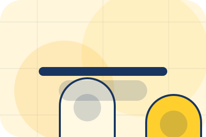
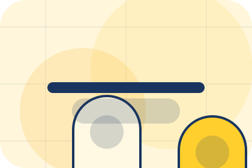
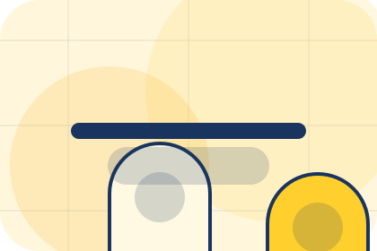
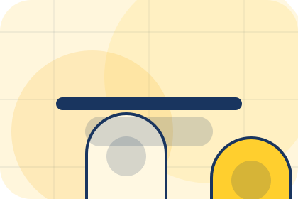
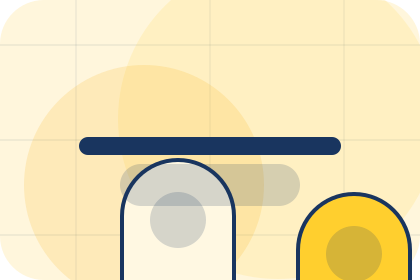
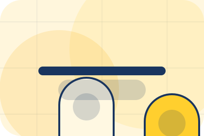
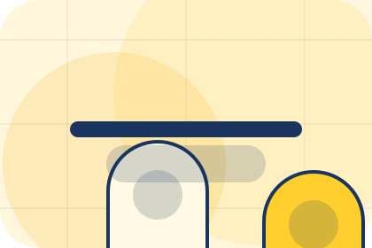

Pressure
Problem names the real friction visitors bring to the home route, so the page feels relevant before any claim is made.
Wellness
Routine commerce shelf for personal improvement and reassurance.

Home / 02
Goal adds care context to the home route, using the routine commerce shelf structure to support personal improvement and reassurance before visitors choose a next step.
Luma uses supplement capsule cards and focused copy to make the decision easier to scan, aligning the section with personal improvement and reassurance rather than filling space.
Open StudioLuma structures goal around context, judgment, and a clear next route so visitors can compare the block quickly before they book a consultation.
Book ConsultationHome / 03
Problem frames the pressure behind the visit, then connects it to a practical path visitors can recognise and act on.
The copy avoids blame and panic. It shows the common friction, the practical consequence, and the calmer route Luma uses to move people forward.
Open Services

Problem names the real friction visitors bring to the home route, so the page feels relevant before any claim is made.
Home / 04
Promise defines the better state Luma is built to create, with enough detail to make the promise believable.
A routine-first wellness shop with offer strip, product education, rounded capsules, and evidence-led reassurance. The section grounds that direction in concrete benefits, visible tradeoffs, and a next route visitors can use when the promise feels relevant.
Open MethodPromise defines what becomes clearer, easier, or safer when Luma is the chosen route.
The benefit is tied to personal improvement and reassurance, not a vague quality claim.

Visitors get a linked path to compare the promise against services, standards, or examples.
Home / 05
Services explains the practical scope, best-fit situations, and expected outcome so wellness visitors can compare options without decoding jargon.
The section keeps the offer concrete: what is included, who it is best for, what decision it supports, and which linked route gives the deeper detail.
Open ServicesWho should use services and when it belongs in the home journey.
The practical benefit visitors should expect after choosing this route.

Where to compare details, pricing, support, or contact options before committing.
Product routine hero
Select the closest route and Luma keeps the next step, proof, and follow-up expectation aligned with personal improvement and reassurance.
Home / 06
Method adds care context to the home route, using the routine commerce shelf structure to support personal improvement and reassurance before visitors choose a next step.
Luma uses supplement capsule cards and focused copy to make the decision easier to scan, aligning the section with personal improvement and reassurance rather than filling space.
Open PricingMethod gives the page a specific angle instead of repeating the navigation label.
The supplement capsule cards show what to compare, what to avoid, and what matters most for wellness, personal care & lifestyle services visitors.
The final cue points to a useful internal route so the section keeps the journey moving.
Home / 07
Results shows what changes after the work: clearer decisions, visible progress, and proof points that connect the offer to real outcomes.
The layout connects before-and-after thinking with measured outcomes, making the result easy to scan without promising what the business cannot guarantee.
Open ResultsThe uncertainty, delay, or missed opportunity visitors bring into results.
The clearer, safer, or more valuable state Luma is designed to support.
The visible cue that connects results to a believable decision, not a loose claim.
Home / 08
Reviews converts customer proof into a useful buying signal: the problem, the experience, and what changed afterward.
Proof stays believable by focusing on situation, service experience, and practical change rather than vague praise or unsupported results.
Open Results
What the visitor needed before choosing Luma, written with enough context to feel real.
Home / 09
Reassurance adds care context to the home route, using the routine commerce shelf structure to support personal improvement and reassurance before visitors choose a next step.
Luma uses supplement capsule cards and focused copy to make the decision easier to scan, aligning the section with personal improvement and reassurance rather than filling space.
Open QuestionsReassurance gives the page a specific angle instead of repeating the navigation label.

The supplement capsule cards show what to compare, what to avoid, and what matters most for wellness, personal care & lifestyle services visitors.

The final cue points to a useful internal route so the section keeps the journey moving.
Home / 10
Luma closes the home route with a clear action, a quick reminder of the value, and a low-friction way to book a consultation.
Visitors who are ready can use the primary action. Visitors who are still comparing can scan the section links, proof, and support routes before they book a consultation.
Book ConsultationThe final block keeps the choice simple: act now, compare one more proof route, or send enough detail for a focused response.
Book Consultationpersonal improvement and reassurance
A routine-first wellness shop with offer strip, product education, rounded capsules, and evidence-led reassurance. Home ends with a direct path to book a consultation, plus enough context for visitors who still need to compare.
 Book Consultation
Book Consultation